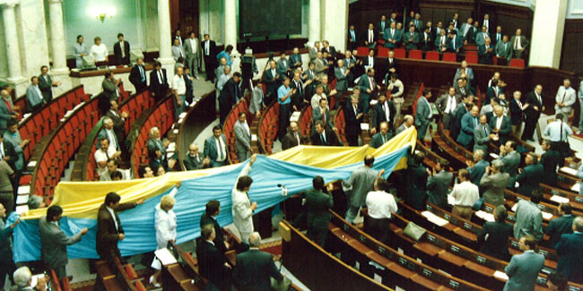
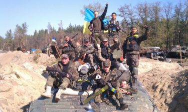
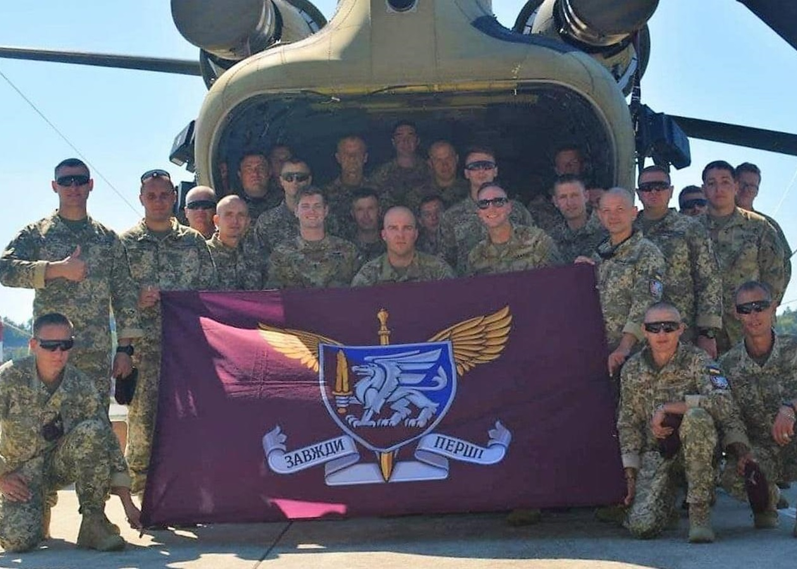
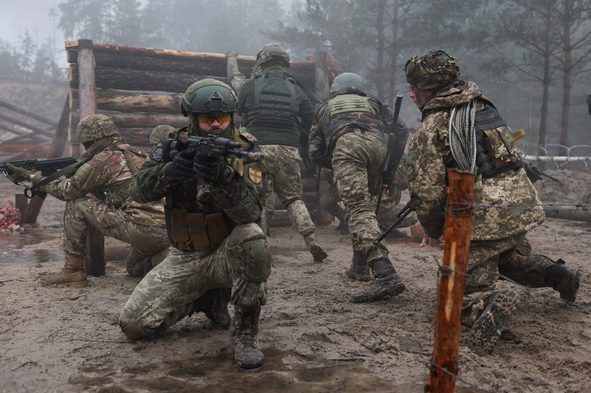
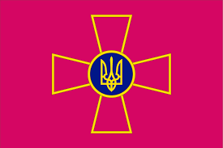
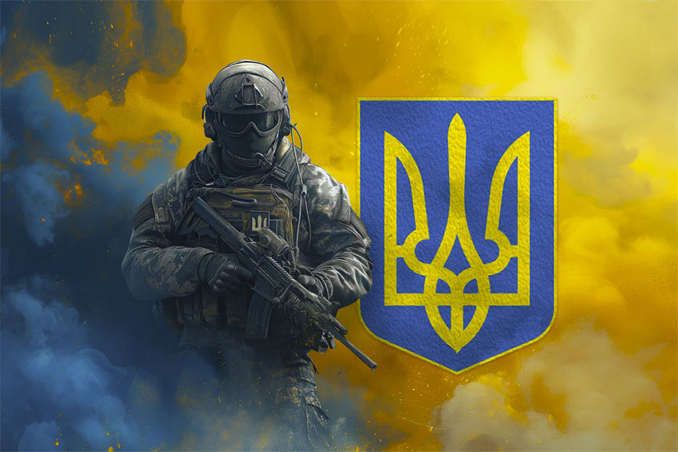

Збройні Сили України: історія, сучасність та значення
Збройні Сили України (ЗСУ) — це головний гарант незалежності та безпеки держави, символ сили та мужності українського народу. Вони пройшли довгий і непростий шлях: від створення у 1991 році на основі радянської спадщини до сучасної армії, яка сьогодні входить у число найбоєздатніших у Європі.
Історичні витоки
Після проголошення незалежності України 24 серпня 1991 року постала необхідність створити власні Збройні Сили. 6 грудня того ж року Верховна Рада ухвалила закон, який заклав юридичну основу для української армії. Цей день і став святом — Днем Збройних Сил України.
На початку 90-х років Україна отримала від СРСР величезну військову спадщину: сотні тисяч військовослужбовців, сучасну на той час техніку та навіть ядерну зброю. Але замість швидкого розвитку країна зіткнулася з економічною кризою і поступовим занепадом армії. Недофінансування, відтік кадрів, застаріла техніка — усе це поставило під сумнів боєздатність війська.
Переломний момент — 2014 рік
Справжнім викликом для ЗСУ стала російська агресія у 2014 році. Анексія Криму та початок бойових дій на Донбасі змусили країну кардинально переосмислити роль армії. Виявилося, що існуюча система оборони не готова до таких викликів.
Саме в цей час проявилася неймовірна підтримка суспільства. Волонтери забезпечували армію формою, засобами захисту, транспортом і навіть зброєю. Завдяки цьому українські військові змогли вистояти у найскладніші моменти.
Розвиток та реформи
З 2014 року армія почала швидке оновлення. Україна отримала підтримку від країн НАТО, зокрема у сфері навчання та постачання сучасного озброєння. Була створена нова структура:
- Десантно-штурмові війська
- Сили спеціальних операцій
- Війська територіальної оборони
Було оновлено підготовку особового складу за стандартами НАТО, а техніка поступово модернізувалася.
Повномасштабна війна 2022 року
24 лютого 2022 року Росія розпочала повномасштабне вторгнення. Саме тоді Збройні Сили України стали щитом не лише для держави, а й для всієї Європи. Світ побачив приклад неймовірної стійкості та мужності.
Українські військові зупинили просування ворога під Києвом, звільнили значну частину окупованих територій, активно використовують сучасні технології — від безпілотників до кіберзасобів.
Образ українського воїна став символом незламності. Армія, яку колись недооцінювали, довела, що здатна чинити опір одній з найбільших армій світу.
Символіка та традиції ЗСУ
Емблема та прапор
Офіційним символом Збройних Сил України є емблема у вигляді хреста з золотим Тризубом у центрі. Вона уособлює єдність армії та держави. Прапор ЗСУ — малинове полотнище із золотим хрестом і тризубом.
Гасло
Офіційне вітання у війську — «Слава Україні!» — «Героям слава!». Воно стало символом патріотизму та незламності.
Традиційні свята
- 6 грудня — День Збройних Сил України
- 14 жовтня — День захисників і захисниць України (у день Покрови Пресвятої Богородиці)
Ці дати вшановують героїв, які боронили й боронять Україну, та підкреслюють тяглість військових традицій від козацтва до сучасності.
Сучасні технології у ЗСУ
Останні роки показали, що українська армія не лише сильна духом, а й інноваційна.
- Дрони та безпілотники. Україна активно розробляє й застосовує безпілотні системи. Вони використовуються для розвідки, коригування артилерії та навіть ударів по ворогу.
- Кіберзахист. В умовах гібридної війни надзвичайно важливим став кіберфронт. Українські фахівці відбивають атаки на критичну інфраструктуру та ведуть інформаційну боротьбу.
- Високоточна зброя. Використання сучасних артилерійських систем, ракет і протитанкових комплексів значно підвищує ефективність армії.
- Співпраця з ІТ-сектором. Українські айтішники створюють системи управління військами, застосунки для координації підрозділів і навіть унікальні рішення для фронту.
- Інновації на полі бою. Від мобільних додатків для наведення артилерії до 3D-друку деталей для техніки — все це стало невід’ємною частиною сучасних ЗСУ.
Значення для суспільства
Сьогодні Збройні Сили України — це більше, ніж армія. Це символ єдності та сили народу. Рівень довіри до військових є найвищим серед усіх державних інституцій. Армія стала частиною культурного коду, її підтримують митці, волонтери, діти й дорослі.
Український воїн сьогодні — це не лише солдат зі зброєю. Це й айтішник, що створює системи безпеки, інженер, який конструює дрони, волонтер, що допомагає на фронті. Уся країна стала єдиним фронтом.
Висновок
Збройні Сили України пройшли складний шлях від слабкої пострадянської армії до сучасного, мотивованого та технологічного війська. Сьогодні вони не лише захищають кордони України, але й боронять принципи свободи та демократії у світі.
Армія стала символом незламності та гордості. Український народ вірить у своїх захисників, а ЗСУ вписують нові сторінки в історію не лише України, а й усієї Європи.
